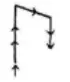
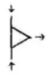
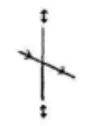
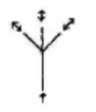
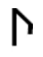
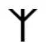
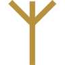

Rune Grimoire
Stadhagaldr (Posture Magick)
Stadhagaldr is an active system of magick consisting of the assumption of runic postures or gestures for magickal effect, both within the vitki and in the surrounding environment. It most likely shares a common Indo-European root tradition of magickal and symbolic gestures with other systems of sacred posture work.
Gestures and postures form part of almost every metaphysical or magickal school, from the simple folding of hands in prayer to extremely complex systems of physical practice. Stadhagaldr is balanced in this respect: the number and intricacy of the postures are varied enough to express the wide variety of forces present, but none require extensive training or straining of the body.
The great advantage of stadhagaldr within the runic system is that it allows the actual shape of the stave to be embodied in the physical apparatus of the vitki. This can result in the embodiment of the entire runic mystery in the flesh, turning the body into a powerful magickal tool.
The Six Aims of Stadhagaldr
Each aim should be striven for in turn, until all six have been mastered:
- Control of the body through posture (stadha)
- Control of thought through song (galdr)
- Control of breath
- Control of emotion
- Becoming aware of the rune realms of the self and of the world(s)
- Control and direction of the will
The Body as Magickal Instrument
The body should not be viewed as something to be defeated or forced into submission but rather as a source of great and holy energy, obtainable through no other medium, when directed in harmony with the hugr. The body is the vitki's personal portion of Midhgardhr, the balanced center of the multiverse containing the potential of all the worlds.
Applications
Stadhagaldr serves as a mode of psychological integration and personal transmutation, and it is also employed in all other types of magickal operations. The vitki may literally build a numinous, living runic talisman within the body through stadhagaldr, becoming a walking rune line. The principles of runic combination and blending work with stadhagaldr in exactly the same way they function with tine or sign magick. The stödhur are simply an alternate mode of expression for the rune might.
Intake of World and Earth Streams
The practice of stadhagaldr is closely connected to the mysteries of the rune streams. The runic postures act as antennas of force by which the vitki may attract, modulate, and re-project rune might for magickal purposes.
There are three types of rune streams:
- Heavenly streams: Cosmic forces from above, not peculiar to this planet
- Terrestrial streams: Flow just under and above the surface of the earth, specific to this planet
- Subterranean (chthonic) streams: Cosmic forces from below, not peculiar to this planet
The individual self contains counterparts to each of these streams, which act as a matrix through which the rune streams act upon and affect the vitki. These streams are perceived in many different ways: some as vibrations, others as waves, flows, rays, and even contractions. The induction of these forces is the mainstay of stadhagaldr.
How Force Flows
Power is drawn in through the hands, feet, and head, directly to the central axis of the vitki. There it is absorbed and modulated, then reemitted for specific purposes or assimilated to alter the self. Each runic posture receives and transmits force in a particular pattern, and from various realms, according to its shape.
This power is directly connected to the physical world through the medium of the human nervous system. When performing the various rune stödhur, the vitki should visualize and feel the flows of force being gathered or projected in a particular pattern through the body, which is in the form of the stave. This will feel as if electric current is passing through the body and will appear as rays of light coursing in angular patterns.
Personal experience should always take precedence. Personal feelings and reactions, rather than "logical" thought processes, are more effective guidelines in the realm of practical magick. This is especially true in stadhagaldr.
Patterns of Force Streams
Four general patterns illustrate how the streams interact with the body during posture work. The arrows indicate the directions in which force streams, though these should not be taken as dogma:

Chthonic circulation: Subterranean streams are lifted into the vitki and circulate back to their source
Synthesis and manifestation: Heavenly and subterranean forces flow into the vitki, are synthesized, and sent out into the terrestrial realm as manifest action


Crosscurrent intensification: A crosscurrent of directed terrestrial force flows through the vertical axis of world streams, resulting in a concentrated intensification of power at the point of confluence
Heavenly redirection: Heavenly and subterranean streams are received and assimilated, then all are redirected toward the heavenly realm

The diagonals sometimes feel like terrestrial links and sometimes like links to the heavenly or subterranean realms. This is true even with the same rune on different occasions, for the rune world is hardly static. A skilled vitki will attempt to experience all of these forces empirically, then begin to divide and classify the raw forces into their finer runic characteristics.
Power Points and Preparation
The ancient vitkar knew well the power of the earth streams, for they formed one of their mightiest mysteries. The best work-stead for stadhagaldr is a known "power point" where the earth and world streams (the horizontal and vertical) flow together. These are recognized by all cultures across the world, and the vitki should seek them out for important rites of stadhagaldr.
The human being is constantly bombarded by power flowing from above, below, and from all corners of the earth. The task is to control this influx and direct it. The power of brightness is received from the wide expanse of space, and the constricting force of darkness is inducted from the center of the earth. It is vital to realize both extremes, consciously seek them out, develop them to their limits, and center them in consciousness.
Before attempting any practical magickal work in this system, the stödhur of all the runes to be used in the operation should be mastered through an intense program of meditational exercise with the runic postures in question.
Opening Formula (Stadhasetning)
A work of stadhagaldr may begin with the general opening rite used in talismanic magick, or the vitki may use a special stadhasetning (posture rite) for engaging the runic forces. This is a powerful rite with which to practice stadhagaldr, and therefore these three stödhur should perhaps be mastered first.
When a stave is presented beside a galdr formali, it indicates that the vitki should assume the stadha of the rune and sing its formulaic galdr and/or the formali that loads the ritual actions with more refined intentions.
The Three Stödhur for Engaging Runic Forces
First Stadha:
Self-knowing, I am a staff
for beams and waves of rune might.
Second Stadha:

Self-knowing, I shape the might
from the deepest depths
out of the realms of the earth
out of the womb of Hel (or the earth mother).
Third Stadha:

Self-knowing, I shape the might
from the highest heights
out of the wide world
out of Heimdallr's realm.
Simple Rites
The performance of any single rune stadha may be considered a rite, especially if the vitki composes a formali to be recited after the galdr is sung. This formali gives specific shape and purpose to the runic force engendered by the operation. The possibilities for potent works of simple beauty are almost limitless.
The following rites of combined runic forces are made up of several simpler rites blended together to form more complex magickal effects. They describe flows or processes of power aimed toward a specific goal. The advantage of stadha-ritual work is that it provides keys to various realms of consciousness and inspires the vitki to the greatest power, if properly performed on all levels of being.
The aim in the rites of stadhagaldr is the blending of several runic forces into one single concentrated and directed stream of power with a definite goal. This is achieved by combining the forms and sounds of various runes together into a single force field of action. The symbol of the operation may be a series of runes or a bind rune drawn on the floor, on a board lying on the altar, or hung at eye level on the wall in front of the vitki. This form should be the focal point of concentration throughout the entire ritual.
These ritual formulas may also be adapted as talismanic or sign-magickal rites.
The Ritual Talisman
Whether or not the vitki is performing a talismanic loading ritual, a symbol describing the particular runic operation may be formed to serve as a lasting outward symbol of the holy inner process that takes place in the rite. This is usually a bind rune or rune row, incised into or painted on a board or paper. It should be displayed where the vitki will see it regularly, constantly reaffirming the link to the magickal force. It may also be portrayed on a small object the vitki carries.
This technique should be used only when the vitki desires to effect an internal change in consciousness. For operations intended to affect the outside environment, the vitki should expend all possible energy during the ritual, then make a complete break with the force, releasing it to do its work. In the latter case, a constant reminder would only hinder the successful fulfillment of the vitki's will.
Increase in Magickal Power
Mannaz Mannaz, unfetter the flow of godly might in me.
Uruz Rune-might is shaped by Uruz.
Fehu Fiery Fehu-might flows to me.
Ansuz The might of Odhinn streams to me.
Gebo The gift of the Gods grows in me.
Thurisaz Rune-streams meet in me and beam
whither I send them,
with full knowledge.
Isaz Self-knowing I steer myself and the streams.

Algiz Rune-might streams between me and the Worlds
along the rainbow of light.
Hagaiaz Rune-might work in me.
Sowilo Rune-might work through me.
Success and Victory
Nauthiz Norn-rune fend off the fetters of wyrd and turn the need.
Fehu Grow and thrive through Fehu.
Sowilo Speed overcomes in me!
Steering might of Sowilo (the sun) lead me from success to success.
Tiwaz Tyr, Tyr
Fruit of the fight, victory!
Thurisaz My deeds make me grow, forever in might and main.
Mannaz Mannaz! Word of fullness be the fulfiller of my wishes.
Laguz Make all the good wax great.
Jera Hail and fullness work through the year!
Wunjo Well-being waxes happiness grows in itself.
Thurisaz Our deeds make us grow, forever in might and main.
Nauthiz Norn-rune fend off the fetters and turn the need!
Algiz Warding might of the World, stream to me.
Warding might of the World, work in me.
Warding might of the World, work through me.
Increase in Creative Force
Fehu Fiery Fehu-might flows to me.
Uruz Uruz shapes the rune-might.
Thurisaz Rune-streams meet in me and beam whither I send them.
The might of my word waxes.
Fehu
Raidho On the right road I wander.
Kenaz Skill comes to me
through the might of Kenaz
knowledge and World-wisdom
wax in me through Kenaz.
Sowilo The speed of Sowilo (the sun) steers me.
Tiwaz Tyr, Tyr
Will of speedy shaping
successfully stream through me.
Jera Hail and fullness,
gifts of the good year!
Rite of Need
Nauthiz Norn-rune fend off the fetters of wyrd, turn the need.
Thou art my need,
through thee I overcome need.
Hagaiaz Wight of the World-wood give good speed and help!
I take up the runes,
I take up my need!
Nauthiz Need-fire flame in me!
Mannaz Mannaz! Word of fullness
be the fulfiller of my needs
and unfetter the flow of rune-might.
Algiz Rune-might streams between me and the Worlds
along the rainbow of light.
Nauthiz Need-fire flame in me!
Sowilo Steering might of the sun lead me forward.
Nauthiz Need-fire flame in me!
Repeat this final stadha until the fire is enkindled in your breast.